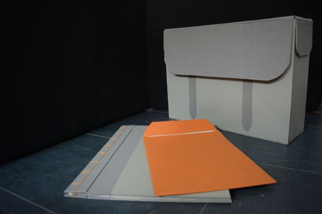
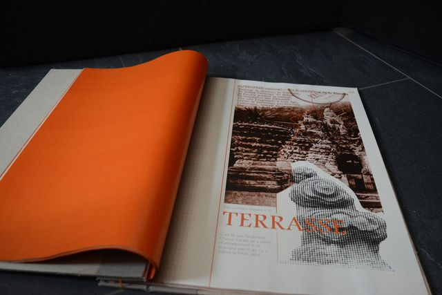
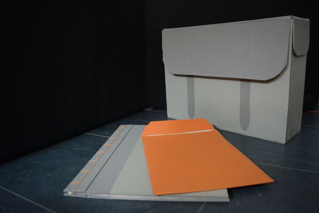
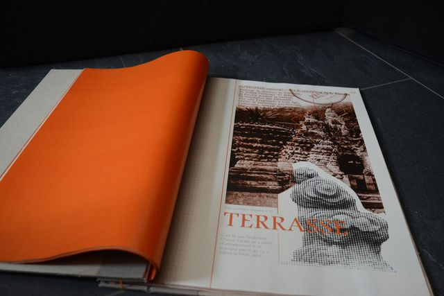
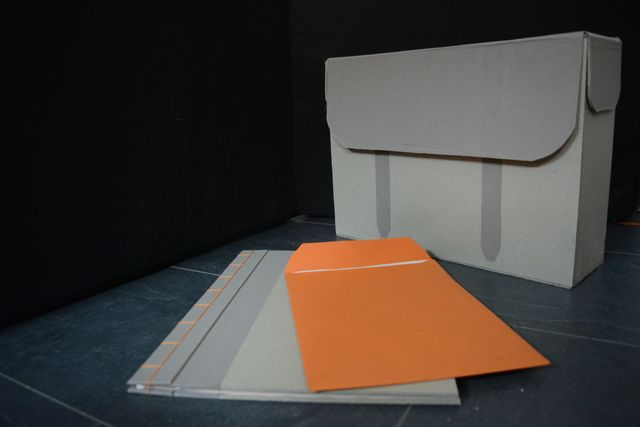
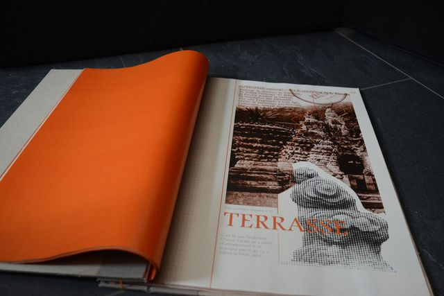

J'ai souhaité réaliser un livre en bichromie présentant les deux grandes oeuvres de Ferdinand Cheval, son Palais Idéal et son Tombeau du Silence et du Repos sans Fin, chaque façade par ordre de création, puis les artistes qu'il a inspiré.
I wanted to make a two-color book presenting the two great works of Ferdinand Cheval, his Ideal Palace and his Tomb of Silence and Endless Rest, each facade in order of creation, then the artists he inspired.


Avec le livre, j'ai réécris et illustré une lettre qu'il avait adressé à l'archiviste départemental de l'époque pour présenter et faire reconnaitre son oeuvre, et j'ai créé une affiche présentant l'artiste, et une boite dont la forme est inspirée des vieux sacs de facteurs pour ranger le livre, la lettre et l'affiche.
With the book, I rewrote and illustrated a letter he had sent to the departmental archivist at the time to present and recognize his work, then I created a poster presenting the artist, and a box whose shape is inspired by old bags of factors, for storing the book, the letter and the poster.